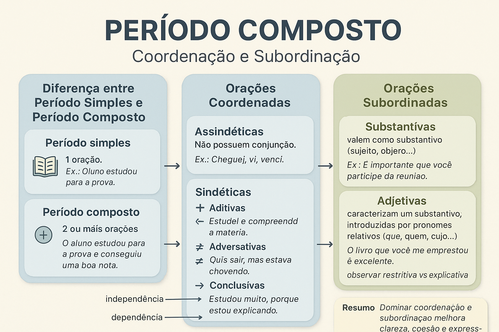

Período Composto: Coordenação e Subordinação
O estudo do período composto é essencial para compreender como as ideias se articulam dentro de um texto. Enquanto o período simples contém apenas uma oração, o período composto apresenta duas ou mais, conectadas de maneira a expressar relações de sentido, dependência ou independência sintática. Esse conhecimento é fundamental para o domínio da escrita e da interpretação textual.
Diferença entre Período Simples e Período Composto
O período simples é formado por apenas uma oração, ou seja, possui apenas um verbo (ou uma locução verbal).
Exemplo:
– O aluno estudou para a prova.
Já o período composto contém duas ou mais orações, unidas por pontuação, conjunções ou pronomes relativos.
Exemplo:
– O aluno estudou para a prova e conseguiu uma boa nota.
Nesse caso, há duas orações com verbos diferentes (estudou e conseguiu), o que caracteriza o período como composto. A forma como essas orações se ligam define se há coordenação ou subordinação.
Orações Coordenadas
As orações coordenadas são independentes sintaticamente — cada uma tem sentido completo, mesmo separada da outra. Elas podem ser classificadas em dois grupos principais:
1. Orações Coordenadas Assindéticas
São aquelas que não possuem conjunção ligando as orações. A relação entre elas se dá apenas pela pontuação.
Exemplo:
– Cheguei, vi, venci.
2. Orações Coordenadas Sindéticas
São unidas por conjunções coordenativas e subdividem-se em cinco tipos:
- Aditivas – indicam soma de ideias.
Exemplo: – Estudei e compreendi a matéria. - Adversativas – indicam oposição.
Exemplo: – Quis sair, mas estava chovendo. - Alternativas – indicam escolha.
Exemplo: – Ou você estuda, ou será reprovado. - Conclusivas – indicam consequência.
Exemplo: – Estudou muito, portanto passou. - Explicativas – indicam justificativa.
Exemplo: – Fique quieto, porque estou explicando.
“As orações coordenadas mantêm sua independência sintática, mas unem-se por meio de relações lógicas e discursivas.”
Orações Subordinadas
As orações subordinadas dependem de outra oração para que seu sentido se complete. Elas exercem funções sintáticas dentro do período, como sujeito, objeto ou adjunto. São classificadas em três tipos principais:
1. Orações Subordinadas Substantivas
Têm valor de substantivo e funcionam como sujeito, objeto direto, objeto indireto, predicativo, complemento nominal ou aposto.
Exemplo:
– É importante que você participe da reunião.
2. Orações Subordinadas Adjetivas
Exercem função de adjetivo, caracterizando um substantivo da oração principal. São introduzidas por pronomes relativos (que, quem, cujo, onde etc.).
Exemplo:
– O livro que você me emprestou é excelente.
As adjetivas subdividem-se em:
- Restritivas – limitam o sentido do termo antecedente. Exemplo: – Os alunos que estudam passam com facilidade.
- Explicativas – acrescentam uma informação adicional, entre vírgulas. Exemplo: – Os alunos, que estudam muito, passaram na prova.
3. Orações Subordinadas Adverbiais
Funcionam como advérbios, indicando circunstâncias como tempo, causa, condição, concessão, finalidade, comparação etc.
Exemplo:
– Saia cedo para que não perca o ônibus.
“As orações subordinadas completam o sentido de outra oração, estabelecendo uma relação de dependência e hierarquia sintática.”
Importância do Estudo das Orações
Compreender a estrutura das orações coordenadas e subordinadas é essencial para escrever e interpretar textos com clareza e precisão. O domínio do período composto permite construir argumentos sólidos, organizar ideias com lógica e ampliar a expressividade da linguagem.
Em resumo, o estudo da coordenação e subordinação é um passo decisivo para o domínio da sintaxe e para a produção de textos mais coesos e articulados.
Referências
BECHARA, Evanildo. Moderna Gramática Portuguesa. Rio de Janeiro: Nova Fronteira, 2019.
CUNHA, Celso; CINTRA, Lindley. Nova Gramática do Português Contemporâneo. Rio de Janeiro: Lexikon, 2020.
NEVES, Maria Helena de Moura. Gramática de Usos do Português. São Paulo: Unesp, 2018.